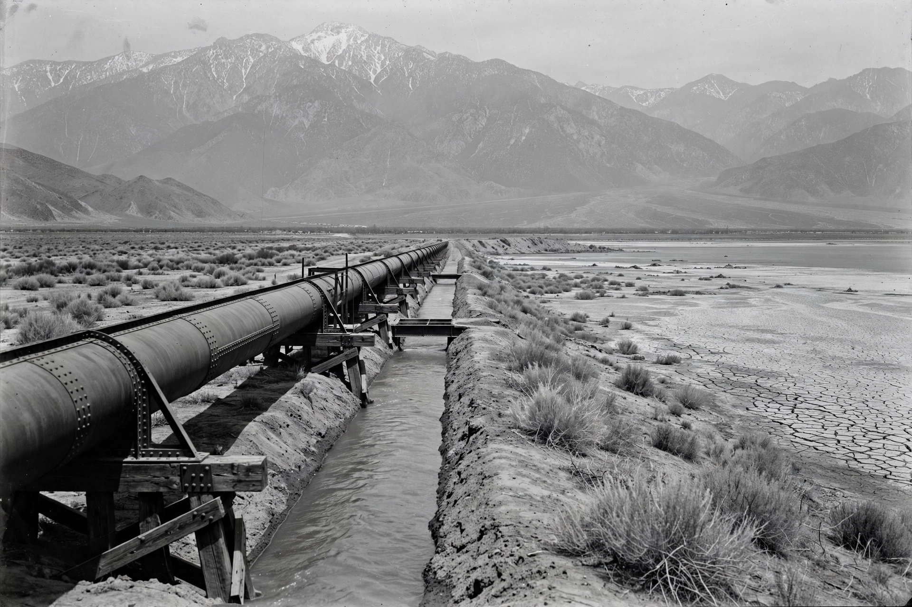

The California Water Wars were a series of conflicts in the early 20th century between the city of Los Angeles and farmers and ranchers in the Owens Valley of eastern California over water rights, as Los Angeles secretly acquired land and diverted the Owens River into its new aqueduct.

Growing Los Angeles feared its river could not supply expansion. Former mayor Fred Eaton and water superintendent William Mulholland, with federal help, quietly bought Owens Valley land and water rights — farmers believed they were selling for a federal irrigation project. The 233-mile Los Angeles Aqueduct opened in 1913, flowing by gravity to the city.
As pumping intensified in the 1920s, Owens Lake dried, farms failed, and angry valley residents seized the aqueduct's Alabama Gates in 1924 and dynamited the aqueduct several times. The conflict ended after the 1927 collapse of the valley's main bank amid embezzlement by its owners, breaking organised resistance. Los Angeles later extended diversions to the Mono Basin, prompting new environmental litigation that partially restored Mono Lake from the 1990s.
The episode inspired the film Chinatown (1974) and books such as Marc Reisner's Cadillac Desert. Owens Lake became a major dust-pollution source, requiring costly mitigation, and remains a symbol of urban–rural water conflict in the American West. See William Mulholland and Los Angeles Aqueduct.